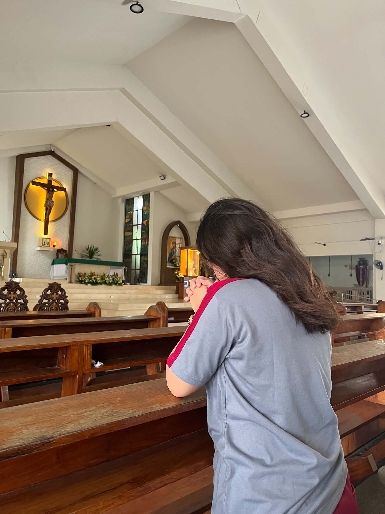
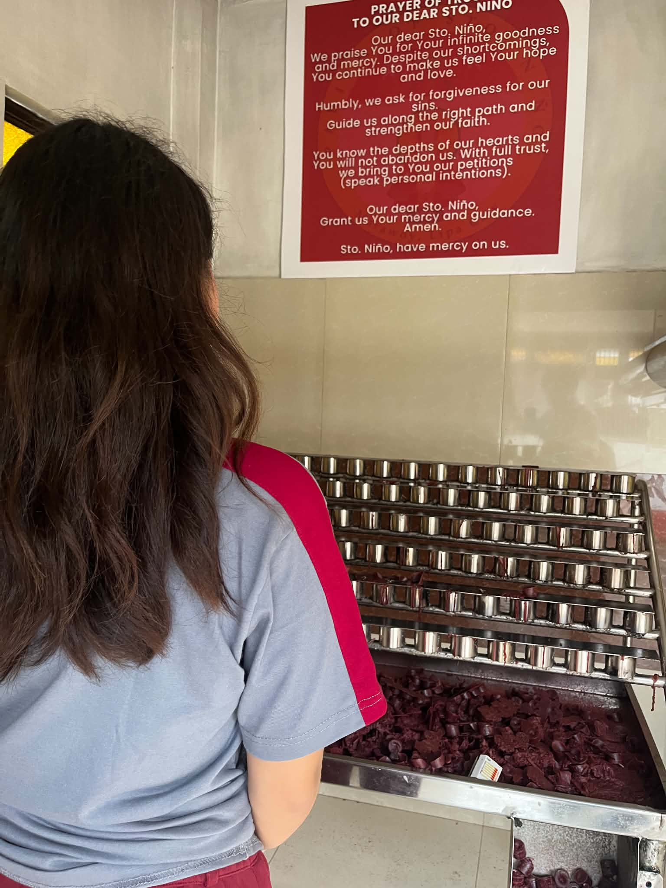
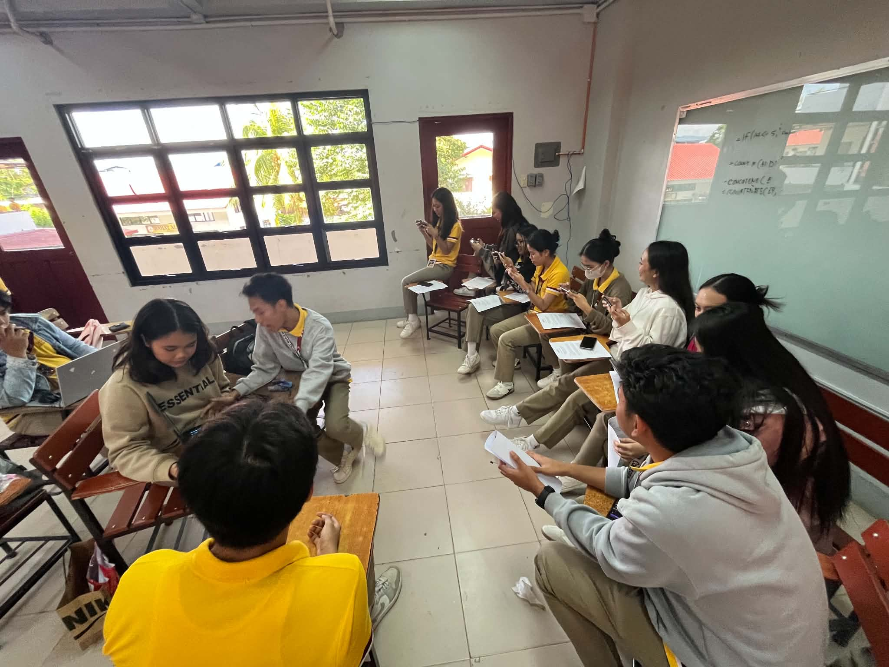
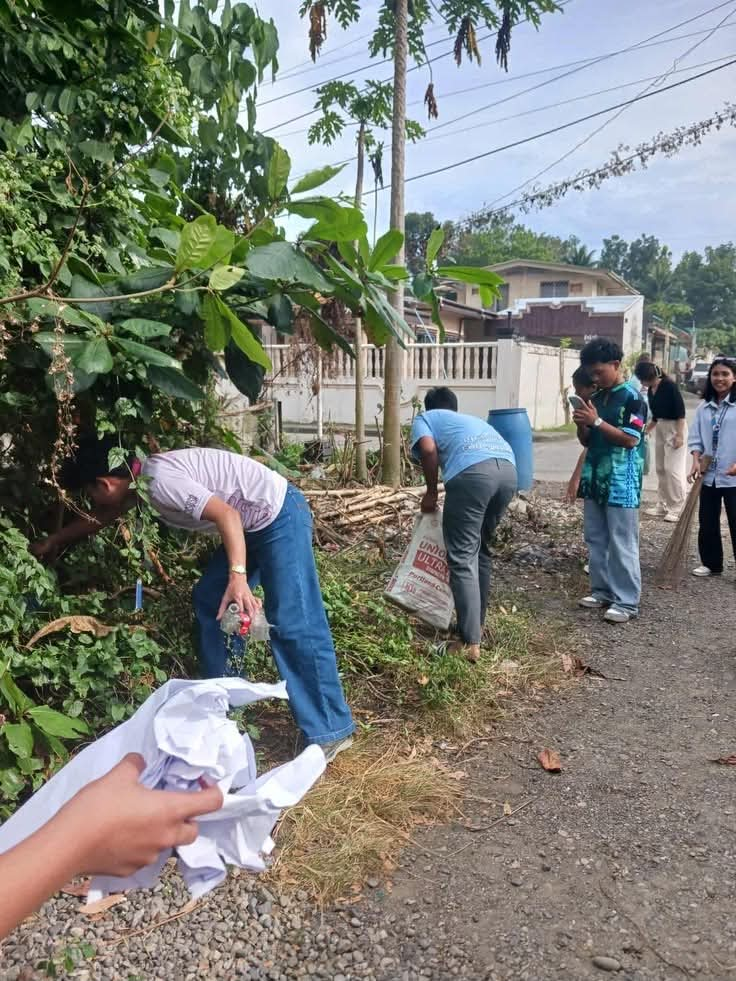
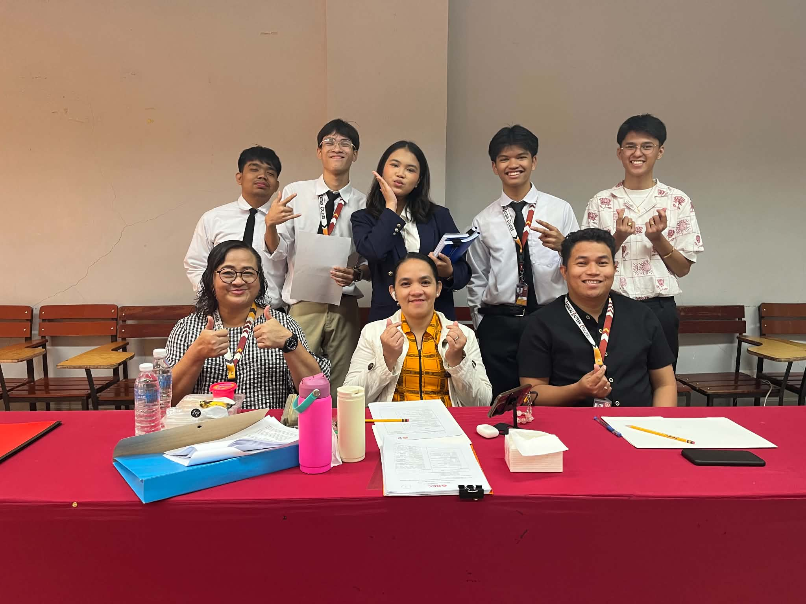

Faith in God
SPIRIT
These pictures demonstrate moments and experiences that reflect my faith in God and spiritual growth.

Praying quietly in Sto. Niño Church
This photo shows me in Sto. Niño Church, praying silently as a way of strengthening my faith and spirit. The context highlights personal devotion and humility, which Rizal valued as part of moral strength. In relation to IT, prayer reflects patience and focus — the same qualities needed when debugging codes or solving technical problems. It is important because it reminds me that spiritual grounding helps me stay calm, ethical, and resilient when facing challenges in both academics and technology.
Frequent visit and going to church often (Sto. Niño Church)
This picture captures my regular visits to Sto. Niño Church, showing consistency in practicing faith and devotion. The context emphasizes discipline and commitment, which are also essential in IT studies where constant practice builds mastery. In IT, just as frequent church visits strengthen spiritual life, consistent study and hands-on practice strengthen technical skills. This is important because it highlights the value of routine and dedication, ensuring growth both in spiritual life and in academic success.
Joining Visita Iglesia (visiting different churches in the city)
This photo represents my participation in Visita Iglesia, a tradition of visiting several churches in one city to pray and reflect. The context shows perseverance and sacrifice in practicing faith, symbolizing a deeper spiritual journey. In IT, this correlates to exploring different fields such as networking, programming, and databases — each “visit” adds knowledge and perspective. It is important because it teaches adaptability and perseverance, qualities needed to handle diverse IT challenges and continuous learning.

Lighting a candle in front of an altar
This picture shows me lighting a candle at the altar, symbolizing hope, prayer, and devotion. The context highlights how even small gestures can express deep faith and connection to God. In IT, the candle represents light and guidance, similar to how technology provides solutions that guide society forward. This is important because it emphasizes that even small acts — like fixing a minor bug or assisting a peer — can have meaningful impact, just as small acts of faith strengthen spirituality.
Helping someone unconscious
This photo depicts me helping someone unconscious, showing that faith is not only expressed in prayer but also in action. The context highlights compassion and courage, living out God’s teachings of service and love for fellowmen. In IT, this correlates to helping classmates with technical issues or assisting in projects, showing service-oriented values. This is important because it proves that faith inspires action — combining technical knowledge with compassion makes me not just a skilled IT student, but also a responsible and caring citizen.
Love of Wisdom
INTELLECT
These photos demonstrate my passion for learning, knowledge, curiosity, and intellectual growth.
Reading a book in the library
This photo shows me reading a book in the library, deeply engaged in learning and reflection. The context highlights the pursuit of knowledge, which Rizal valued as a foundation for intellectual growth. In IT, reading and studying references is essential for understanding theories, programming concepts, and system designs. This is important because it develops critical thinking and builds a strong knowledge base, preparing me to solve complex problems and innovate in the field of technology.
Writing notes or highlighting reviewers
This picture captures me writing notes and highlighting important parts of my reviewers, showing active learning and discipline. The context emphasizes the effort to absorb and organize knowledge effectively. In IT, note-taking and documentation are crucial skills, whether for coding, troubleshooting, or project management. This is important because it trains me to be detail-oriented and systematic, ensuring that I can recall and apply knowledge efficiently in both academic and professional settings.

Participating in class recitation or discussion
This photo depicts me actively participating in a class recitation or discussion, sharing ideas and engaging with peers. The context highlights confidence and communication in the learning process. In IT, participation mirrors collaboration in team projects, where exchanging ideas leads to better solutions and innovations. This is important because it builds confidence, sharpens communication skills, and fosters teamwork — all of which are vital for becoming an effective IT professional.
Using a laptop for research or coding
This picture shows me using a laptop to conduct research or practice coding, applying knowledge in a practical way. The context emphasizes modern learning tools and hands-on experience. In IT, laptops are essential for programming, system analysis, and exploring new technologies. This is important because it demonstrates how knowledge is applied in real-world scenarios, helping me develop technical skills and preparing me for future professional challenges in the tech industry.
Tutoring or explaining lessons to classmates
This photo captures me tutoring or explaining lessons to my classmates, showing the value of sharing knowledge. The context highlights teaching as an extension of learning, where wisdom grows by being passed on to others. In IT, this correlates to peer support, mentoring, and collaborative problem-solving, which are common in both academic and workplace settings. This is important because it strengthens my own understanding, builds leadership skills, and reflects Rizal’s belief that wisdom should benefit not only oneself but also the community.
Service to Fellowmen
PURPOSE
These pictures demonstrate how I help, cooperate with, and serve other people.

Helping the school during intramurals by patrolling and keeping the school clean
This photo shows me helping the school during intramurals by patrolling and keeping the surroundings clean, reflecting responsibility and service. The context highlights active participation in maintaining order and cleanliness during school events. In IT, this correlates to maintaining systems and ensuring smooth operations, just like keeping a network or database free from errors. This is important because it shows discipline, responsibility, and care for the environment, values that strengthen both community service and professional reliability.

Volunteering in a school/community clean-up
This picture captures volunteering in a clean-up activity, showing dedication to service and care for the community. The context emphasizes teamwork and responsibility in improving shared spaces. In IT, this relates to collaboration in projects and maintaining systems to ensure efficiency. This is important because it teaches accountability, cooperation, and the willingness to contribute to the common good, qualities that make me a responsible IT student and citizen.
Assisting a younger student with homework
This photo depicts me assisting a younger student with homework, showing compassion and willingness to help others learn. The context highlights mentorship and guidance, which Rizal valued as part of uplifting others through education. In IT, this correlates to peer tutoring, knowledge sharing, and mentoring in technical skills. This is important because it strengthens my own understanding, builds leadership, and ensures that wisdom is shared to benefit others, not just myself.
Joining an outreach program (giving food/supplies)
This picture shows participation in an outreach program, giving food and supplies to those in need. The context highlights service beyond the classroom, extending help to the wider community. In IT, this mirrors the idea of using technology to serve society, such as creating systems that benefit communities or providing technical support. This is important because it develops empathy, social responsibility, and the mindset that knowledge and skills should be used to uplift others.

Guiding classmates in group work or leadership role in a research subject
This photo captures me guiding classmates in group work, taking on a leadership role in a research subject. The context emphasizes teamwork, leadership, and responsibility in academic collaboration. In IT, this directly connects to project management, where guiding a team ensures efficiency and success in technical tasks. This is important because it builds confidence, strengthens communication, and prepares me to be a leader who can balance technical expertise with service-oriented values.